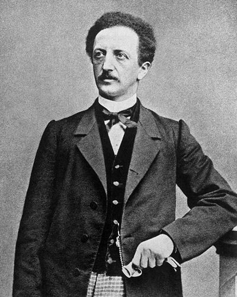

Ideologies / Left
What is Lassalleanism?
Lassalleanism is a political ideology in the Left family. The founding document of the first German workers' party. Lassalle argued that an iron law holds wages at subsistence level, so self help, savings clubs and consumer societies cannot free the working class. Workers must become their own employers in producers' cooperatives, and only the state has the credit to fund these. The first task is therefore an independent workers' party that wins universal and equal suffrage. Unlike Marx, he treated the existing national state as an instrument to be won over and used.
Universal suffrage and state aid for workers' own cooperatives.
Defined from: Ferdinand Lassalle, Open Letter of Reply (Offenes Antwortschreiben) (1863)
See how close you are to Lassalleanism Dare a friend to answer as one

.jpg){kind=link}
Where Lassalleanism stands on 13 axes
Each axis runs from 0 to 100. A score of 50 is the middle. On a classic compass it sits in the Libertarian Left quadrant.
| Axis | Position | Score | In words |
|---|---|---|---|
| EconomyMarket to Planned | 60 | Leans Planned | |
| OwnershipPrivate to Collective | 80 | Strongly Collective | |
| RightsLiberty to Security | 45 | Balanced | |
| GovernmentDemocracy to Autocracy | 25 | Strongly Democracy | |
| StructureDecentralised to Centralised | 80 | Strongly Centralised | |
| NationInternationalist to Nationalist | 65 | Leans Nationalist | |
| ImmigrationMulticulturalist to Assimilationist | 50 | Balanced | |
| ValuesProgressive to Traditional | 40 | Leans Progressive | |
| TechnologyAccelerationist to Precautionary | 35 | Leans Accelerationist | |
| EnvironmentIndustrialist to Environmentalist | 30 | Strongly Industrialist | |
| ReligionSecular to Religious | 20 | Strongly Secular | |
| MilitaryPacifist to Militarist | 40 | Leans Pacifist | |
| TradeFree Trade to Protectionist | 55 | Balanced |
Ideologies closest to Lassalleanism
- Fabianism90% alike
- Market Socialism83% alike
- Labour Zionism83% alike
- Democratic Socialism83% alike
- Three Principles of the People81% alike
Its opposite on this map is Christian Reconstructionism (Theonomy), at 42%.
Parties near Lassalleanism
- Labour Party of 1945United Kingdom. Let Us Face the Future (1945)87% alike
- FRELIMO of 1962Mozambique. FRELIMO Constitution and Programme (1962)86% alike
- Popular UnityChile. Programa básico de gobierno de la Unidad Popular (1969)86% alike
- Uganda People's Congress of 1969Uganda. The Common Man's Charter (1969)86% alike
Common questions
What is Lassalleanism?
Lassalleanism is a political ideology in the Left family. The founding document of the first German workers' party. Lassalle argued that an iron law holds wages at subsistence level, so self help, savings clubs and consumer societies cannot free the working class. Workers must become their own employers in producers' cooperatives, and only the state has the credit to fund these. The first task is therefore an independent workers' party that wins universal and equal suffrage. Unlike Marx, he treated the existing national state as an instrument to be won over and used.
What does Lassalleanism believe?
In one line: Universal suffrage and state aid for workers' own cooperatives. Its strongest positions are Collective, Centralised, Secular. The founding document of the first German workers' party. Lassalle argued that an iron law holds wages at subsistence level, so self help, savings clubs and consumer societies cannot free the working class. Workers must become their own employers in producers' cooperatives, and only the state has the credit to fund these. The first task is therefore an independent workers' party that wins universal and equal suffrage. Unlike Marx, he treated the existing national state as an instrument to be won over and used.
Who founded Lassalleanism?
Lassalleanism is defined here from Open Letter of Reply (Offenes Antwortschreiben) (1863) by Ferdinand Lassalle. The thinker most tied to it is Ferdinand Lassalle (1825 to 1864).
Is Lassalleanism left wing or right wing?
On a classic two axis compass Lassalleanism falls in the Libertarian Left quadrant, which means the economic left and the middle between libertarian and authoritarian. Left and right hide a lot, though, which is why EthosScales scores it on thirteen separate axes.
How is Lassalleanism different from Fabianism?
They are close: 90% alike. The biggest gaps are on Nation, where Lassalleanism scores 65 and Fabianism scores 45, and Economy, where Lassalleanism scores 60 and Fabianism scores 70. On each axis, 0 is one end and 100 is the other.
Think this is wrong? Suggest a correction. The scores are editorial estimates.